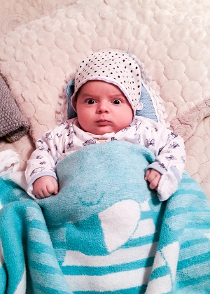

Rail Imanzade was born in Baku , Azerbaijan on February 11, 2017. He is the son of Qochaq Imanzade ( born 1991 ) and Shehla Imanzade ( born 1989 ). His parents are civil servants. Rail is their fisrt son and their happiness. He is 5 months old but he is trying hard to stand up and talk. He can say only two words: "Aquu" and "Vaquu". We do not know these words meanings yet but linguists in Oxford are close to discover this mystery.